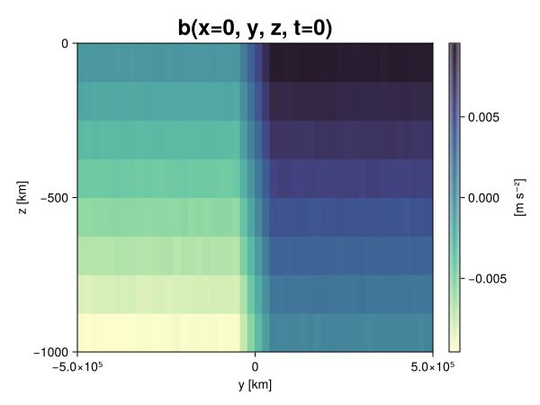
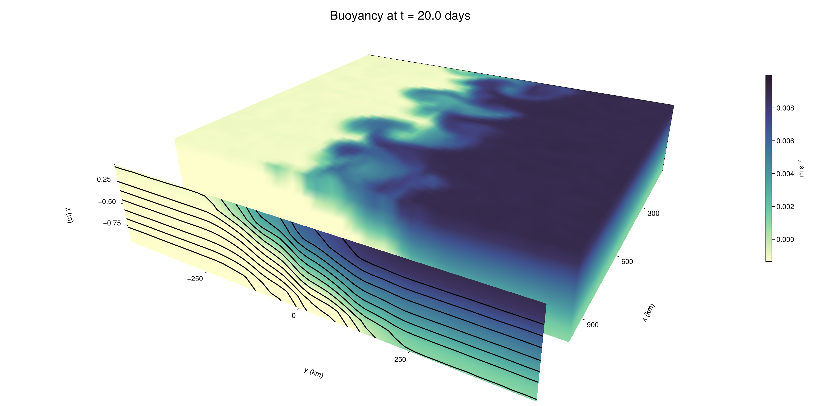

Baroclinic adjustment
In this example, we simulate the evolution and equilibration of a baroclinically unstable front.
Install dependencies
First let's make sure we have all required packages installed.
using Pkg
pkg"add Oceananigans, CairoMakie"using Oceananigans
using Oceananigans.UnitsGrid
We use a three-dimensional channel that is periodic in the x direction:
Lx = 1000kilometers # east-west extent [m]
Ly = 1000kilometers # north-south extent [m]
Lz = 1kilometers # depth [m]
grid = RectilinearGrid(size = (48, 48, 8),
x = (0, Lx),
y = (-Ly/2, Ly/2),
z = (-Lz, 0),
topology = (Periodic, Bounded, Bounded))48×48×8 RectilinearGrid{Float64, Periodic, Bounded, Bounded} on CPU with 3×3×3 halo
├── Periodic x ∈ [0.0, 1.0e6) regularly spaced with Δx=20833.3
├── Bounded y ∈ [-500000.0, 500000.0] regularly spaced with Δy=20833.3
└── Bounded z ∈ [-1000.0, 0.0] regularly spaced with Δz=125.0Model
We built a HydrostaticFreeSurfaceModel with an ImplicitFreeSurface solver. Regarding Coriolis, we use a beta-plane centered at 45° South.
model = HydrostaticFreeSurfaceModel(; grid,
coriolis = BetaPlane(latitude = -45),
buoyancy = BuoyancyTracer(),
tracers = :b,
momentum_advection = WENO(),
tracer_advection = WENO())HydrostaticFreeSurfaceModel{CPU, RectilinearGrid}(time = 0 seconds, iteration = 0)
├── grid: 48×48×8 RectilinearGrid{Float64, Periodic, Bounded, Bounded} on CPU with 3×3×3 halo
├── timestepper: QuasiAdamsBashforth2TimeStepper
├── tracers: b
├── closure: Nothing
├── buoyancy: BuoyancyTracer with ĝ = NegativeZDirection()
├── free surface: ImplicitFreeSurface with gravitational acceleration 9.80665 m s⁻²
│ └── solver: FFTImplicitFreeSurfaceSolver
├── advection scheme:
│ ├── momentum: WENO reconstruction order 5
│ └── b: WENO reconstruction order 5
└── coriolis: BetaPlane{Float64}We start our simulation from rest with a baroclinically unstable buoyancy distribution. We use ramp(y, Δy), defined below, to specify a front with width Δy and horizontal buoyancy gradient M². We impose the front on top of a vertical buoyancy gradient N² and a bit of noise.
"""
ramp(y, Δy)
Linear ramp from 0 to 1 between -Δy/2 and +Δy/2.
For example:
```
y < -Δy/2 => ramp = 0
-Δy/2 < y < -Δy/2 => ramp = y / Δy
y > Δy/2 => ramp = 1
```
"""
ramp(y, Δy) = min(max(0, y/Δy + 1/2), 1)
N² = 1e-5 # [s⁻²] buoyancy frequency / stratification
M² = 1e-7 # [s⁻²] horizontal buoyancy gradient
Δy = 100kilometers # width of the region of the front
Δb = Δy * M² # buoyancy jump associated with the front
ϵb = 1e-2 * Δb # noise amplitude
bᵢ(x, y, z) = N² * z + Δb * ramp(y, Δy) + ϵb * randn()
set!(model, b=bᵢ)Let's visualize the initial buoyancy distribution.
using CairoMakie
# Build coordinates with units of kilometers
x, y, z = 1e-3 .* nodes(grid, (Center(), Center(), Center()))
b = model.tracers.b
fig, ax, hm = heatmap(view(b, 1, :, :),
colormap = :deep,
axis = (xlabel = "y [km]",
ylabel = "z [km]",
title = "b(x=0, y, z, t=0)",
titlesize = 24))
Colorbar(fig[1, 2], hm, label = "[m s⁻²]")
fig
Simulation
Now let's build a Simulation.
simulation = Simulation(model, Δt=20minutes, stop_time=20days)Simulation of HydrostaticFreeSurfaceModel{CPU, RectilinearGrid}(time = 0 seconds, iteration = 0)
├── Next time step: 20 minutes
├── Elapsed wall time: 0 seconds
├── Wall time per iteration: NaN days
├── Stop time: 20 days
├── Stop iteration : Inf
├── Wall time limit: Inf
├── Callbacks: OrderedDict with 4 entries:
│ ├── stop_time_exceeded => Callback of stop_time_exceeded on IterationInterval(1)
│ ├── stop_iteration_exceeded => Callback of stop_iteration_exceeded on IterationInterval(1)
│ ├── wall_time_limit_exceeded => Callback of wall_time_limit_exceeded on IterationInterval(1)
│ └── nan_checker => Callback of NaNChecker for u on IterationInterval(100)
├── Output writers: OrderedDict with no entries
└── Diagnostics: OrderedDict with no entriesWe add a TimeStepWizard callback to adapt the simulation's time-step,
conjure_time_step_wizard!(simulation, IterationInterval(20), cfl=0.2, max_Δt=20minutes)Also, we add a callback to print a message about how the simulation is going,
using Printf
wall_clock = Ref(time_ns())
function print_progress(sim)
u, v, w = model.velocities
progress = 100 * (time(sim) / sim.stop_time)
elapsed = (time_ns() - wall_clock[]) / 1e9
@printf("[%05.2f%%] i: %d, t: %s, wall time: %s, max(u): (%6.3e, %6.3e, %6.3e) m/s, next Δt: %s\n",
progress, iteration(sim), prettytime(sim), prettytime(elapsed),
maximum(abs, u), maximum(abs, v), maximum(abs, w), prettytime(sim.Δt))
wall_clock[] = time_ns()
return nothing
end
add_callback!(simulation, print_progress, IterationInterval(100))Diagnostics/Output
Here, we save the buoyancy, $b$, at the edges of our domain as well as the zonal ($x$) average of buoyancy.
u, v, w = model.velocities
ζ = ∂x(v) - ∂y(u)
B = Average(b, dims=1)
U = Average(u, dims=1)
V = Average(v, dims=1)
filename = "baroclinic_adjustment"
save_fields_interval = 0.5day
slicers = (east = (grid.Nx, :, :),
north = (:, grid.Ny, :),
bottom = (:, :, 1),
top = (:, :, grid.Nz))
for side in keys(slicers)
indices = slicers[side]
simulation.output_writers[side] = JLD2OutputWriter(model, (; b, ζ);
filename = filename * "_$(side)_slice",
schedule = TimeInterval(save_fields_interval),
overwrite_existing = true,
indices)
end
simulation.output_writers[:zonal] = JLD2OutputWriter(model, (; b=B, u=U, v=V);
filename = filename * "_zonal_average",
schedule = TimeInterval(save_fields_interval),
overwrite_existing = true)JLD2OutputWriter scheduled on TimeInterval(12 hours):
├── filepath: ./baroclinic_adjustment_zonal_average.jld2
├── 3 outputs: (b, u, v)
├── array type: Array{Float64}
├── including: [:grid, :coriolis, :buoyancy, :closure]
├── file_splitting: NoFileSplitting
└── file size: 30.7 KiBNow we're ready to run.
@info "Running the simulation..."
run!(simulation)
@info "Simulation completed in " * prettytime(simulation.run_wall_time)[ Info: Running the simulation...
[ Info: Initializing simulation...
[00.00%] i: 0, t: 0 seconds, wall time: 21.219 seconds, max(u): (0.000e+00, 0.000e+00, 0.000e+00) m/s, next Δt: 20 minutes
[ Info: ... simulation initialization complete (21.854 seconds)
[ Info: Executing initial time step...
[ Info: ... initial time step complete (22.360 seconds).
[06.94%] i: 100, t: 1.389 days, wall time: 37.906 seconds, max(u): (1.220e-01, 1.229e-01, 1.470e-03) m/s, next Δt: 20 minutes
[13.89%] i: 200, t: 2.778 days, wall time: 2.583 seconds, max(u): (2.200e-01, 2.095e-01, 1.794e-03) m/s, next Δt: 20 minutes
[20.83%] i: 300, t: 4.167 days, wall time: 2.542 seconds, max(u): (2.977e-01, 3.151e-01, 1.909e-03) m/s, next Δt: 20 minutes
[27.78%] i: 400, t: 5.556 days, wall time: 2.577 seconds, max(u): (3.833e-01, 3.991e-01, 2.131e-03) m/s, next Δt: 20 minutes
[34.72%] i: 500, t: 6.944 days, wall time: 2.608 seconds, max(u): (4.980e-01, 5.636e-01, 2.142e-03) m/s, next Δt: 20 minutes
[41.67%] i: 600, t: 8.333 days, wall time: 2.476 seconds, max(u): (6.252e-01, 8.118e-01, 2.683e-03) m/s, next Δt: 20 minutes
[48.61%] i: 700, t: 9.722 days, wall time: 2.445 seconds, max(u): (8.276e-01, 1.112e+00, 4.102e-03) m/s, next Δt: 20 minutes
[55.56%] i: 800, t: 11.111 days, wall time: 2.349 seconds, max(u): (1.197e+00, 1.240e+00, 5.051e-03) m/s, next Δt: 20 minutes
[62.50%] i: 900, t: 12.500 days, wall time: 2.276 seconds, max(u): (1.411e+00, 1.174e+00, 4.293e-03) m/s, next Δt: 20 minutes
[69.44%] i: 1000, t: 13.889 days, wall time: 2.505 seconds, max(u): (1.331e+00, 1.108e+00, 4.771e-03) m/s, next Δt: 20 minutes
[76.39%] i: 1100, t: 15.278 days, wall time: 2.358 seconds, max(u): (1.371e+00, 1.166e+00, 3.203e-03) m/s, next Δt: 20 minutes
[83.33%] i: 1200, t: 16.667 days, wall time: 2.382 seconds, max(u): (1.299e+00, 1.082e+00, 3.032e-03) m/s, next Δt: 20 minutes
[90.28%] i: 1300, t: 18.056 days, wall time: 2.356 seconds, max(u): (1.448e+00, 1.089e+00, 3.117e-03) m/s, next Δt: 20 minutes
[97.22%] i: 1400, t: 19.444 days, wall time: 2.336 seconds, max(u): (1.385e+00, 1.032e+00, 2.932e-03) m/s, next Δt: 20 minutes
[ Info: Simulation is stopping after running for 1.374 minutes.
[ Info: Simulation time 20 days equals or exceeds stop time 20 days.
[ Info: Simulation completed in 1.375 minutes
Visualization
All that's left is to make a pretty movie. Actually, we make two visualizations here. First, we illustrate how to make a 3D visualization with Makie's Axis3 and Makie.surface. Then we make a movie in 2D. We use CairoMakie in this example, but note that using GLMakie is more convenient on a system with OpenGL, as figures will be displayed on the screen.
using CairoMakieThree-dimensional visualization
We load the saved buoyancy output on the top, north, and east surface as FieldTimeSerieses.
filename = "baroclinic_adjustment"
sides = keys(slicers)
slice_filenames = NamedTuple(side => filename * "_$(side)_slice.jld2" for side in sides)
b_timeserieses = (east = FieldTimeSeries(slice_filenames.east, "b"),
north = FieldTimeSeries(slice_filenames.north, "b"),
top = FieldTimeSeries(slice_filenames.top, "b"))
B_timeseries = FieldTimeSeries(filename * "_zonal_average.jld2", "b")
times = B_timeseries.times
grid = B_timeseries.grid48×48×8 RectilinearGrid{Float64, Periodic, Bounded, Bounded} on CPU with 3×3×3 halo
├── Periodic x ∈ [0.0, 1.0e6) regularly spaced with Δx=20833.3
├── Bounded y ∈ [-500000.0, 500000.0] regularly spaced with Δy=20833.3
└── Bounded z ∈ [-1000.0, 0.0] regularly spaced with Δz=125.0We build the coordinates. We rescale horizontal coordinates to kilometers.
xb, yb, zb = nodes(b_timeserieses.east)
xb = xb ./ 1e3 # convert m -> km
yb = yb ./ 1e3 # convert m -> km
Nx, Ny, Nz = size(grid)
x_xz = repeat(x, 1, Nz)
y_xz_north = y[end] * ones(Nx, Nz)
z_xz = repeat(reshape(z, 1, Nz), Nx, 1)
x_yz_east = x[end] * ones(Ny, Nz)
y_yz = repeat(y, 1, Nz)
z_yz = repeat(reshape(z, 1, Nz), grid.Ny, 1)
x_xy = x
y_xy = y
z_xy_top = z[end] * ones(grid.Nx, grid.Ny)Then we create a 3D axis. We use zonal_slice_displacement to control where the plot of the instantaneous zonal average flow is located.
fig = Figure(size = (1600, 800))
zonal_slice_displacement = 1.2
ax = Axis3(fig[2, 1],
aspect=(1, 1, 1/5),
xlabel = "x (km)",
ylabel = "y (km)",
zlabel = "z (m)",
xlabeloffset = 100,
ylabeloffset = 100,
zlabeloffset = 100,
limits = ((x[1], zonal_slice_displacement * x[end]), (y[1], y[end]), (z[1], z[end])),
elevation = 0.45,
azimuth = 6.8,
xspinesvisible = false,
zgridvisible = false,
protrusions = 40,
perspectiveness = 0.7)Axis3()We use data from the final savepoint for the 3D plot. Note that this plot can easily be animated by using Makie's Observable. To dive into Observables, check out Makie.jl's Documentation.
n = length(times)41Now let's make a 3D plot of the buoyancy and in front of it we'll use the zonally-averaged output to plot the instantaneous zonal-average of the buoyancy.
b_slices = (east = interior(b_timeserieses.east[n], 1, :, :),
north = interior(b_timeserieses.north[n], :, 1, :),
top = interior(b_timeserieses.top[n], :, :, 1))
# Zonally-averaged buoyancy
B = interior(B_timeseries[n], 1, :, :)
clims = 1.1 .* extrema(b_timeserieses.top[n][:])
kwargs = (colorrange=clims, colormap=:deep, shading=NoShading)
surface!(ax, x_yz_east, y_yz, z_yz; color = b_slices.east, kwargs...)
surface!(ax, x_xz, y_xz_north, z_xz; color = b_slices.north, kwargs...)
surface!(ax, x_xy, y_xy, z_xy_top; color = b_slices.top, kwargs...)
sf = surface!(ax, zonal_slice_displacement .* x_yz_east, y_yz, z_yz; color = B, kwargs...)
contour!(ax, y, z, B; transformation = (:yz, zonal_slice_displacement * x[end]),
levels = 15, linewidth = 2, color = :black)
Colorbar(fig[2, 2], sf, label = "m s⁻²", height = Relative(0.4), tellheight=false)
title = "Buoyancy at t = " * string(round(times[n] / day, digits=1)) * " days"
fig[1, 1:2] = Label(fig, title; fontsize = 24, tellwidth = false, padding = (0, 0, -120, 0))
rowgap!(fig.layout, 1, Relative(-0.2))
colgap!(fig.layout, 1, Relative(-0.1))
save("baroclinic_adjustment_3d.png", fig)
Two-dimensional movie
We make a 2D movie that shows buoyancy $b$ and vertical vorticity $ζ$ at the surface, as well as the zonally-averaged zonal and meridional velocities $U$ and $V$ in the $(y, z)$ plane. First we load the FieldTimeSeries and extract the additional coordinates we'll need for plotting
ζ_timeseries = FieldTimeSeries(slice_filenames.top, "ζ")
U_timeseries = FieldTimeSeries(filename * "_zonal_average.jld2", "u")
B_timeseries = FieldTimeSeries(filename * "_zonal_average.jld2", "b")
V_timeseries = FieldTimeSeries(filename * "_zonal_average.jld2", "v")
xζ, yζ, zζ = nodes(ζ_timeseries)
yv = ynodes(V_timeseries)
xζ = xζ ./ 1e3 # convert m -> km
yζ = yζ ./ 1e3 # convert m -> km
yv = yv ./ 1e3 # convert m -> km49-element Vector{Float64}:
-500.0
-479.1666666666667
-458.3333333333333
-437.5
-416.6666666666667
-395.8333333333333
-375.0
-354.1666666666667
-333.3333333333333
-312.5
-291.6666666666667
-270.8333333333333
-250.0
-229.16666666666666
-208.33333333333334
-187.5
-166.66666666666666
-145.83333333333334
-125.0
-104.16666666666667
-83.33333333333333
-62.5
-41.666666666666664
-20.833333333333332
0.0
20.833333333333332
41.666666666666664
62.5
83.33333333333333
104.16666666666667
125.0
145.83333333333334
166.66666666666666
187.5
208.33333333333334
229.16666666666666
250.0
270.8333333333333
291.6666666666667
312.5
333.3333333333333
354.1666666666667
375.0
395.8333333333333
416.6666666666667
437.5
458.3333333333333
479.1666666666667
500.0Next, we set up a plot with 4 panels. The top panels are large and square, while the bottom panels get a reduced aspect ratio through rowsize!.
set_theme!(Theme(fontsize=24))
fig = Figure(size=(1800, 1000))
axb = Axis(fig[1, 2], xlabel="x (km)", ylabel="y (km)", aspect=1)
axζ = Axis(fig[1, 3], xlabel="x (km)", ylabel="y (km)", aspect=1, yaxisposition=:right)
axu = Axis(fig[2, 2], xlabel="y (km)", ylabel="z (m)")
axv = Axis(fig[2, 3], xlabel="y (km)", ylabel="z (m)", yaxisposition=:right)
rowsize!(fig.layout, 2, Relative(0.3))To prepare a plot for animation, we index the timeseries with an Observable,
n = Observable(1)
b_top = @lift interior(b_timeserieses.top[$n], :, :, 1)
ζ_top = @lift interior(ζ_timeseries[$n], :, :, 1)
U = @lift interior(U_timeseries[$n], 1, :, :)
V = @lift interior(V_timeseries[$n], 1, :, :)
B = @lift interior(B_timeseries[$n], 1, :, :)Observable([-0.009365697899089703 -0.008115441093705688 -0.0068704177398837924 -0.005624356048418866 -0.004366186851629132 -0.003130300487017216 -0.0018834133937378611 -0.0006156908255506398; -0.009404125736946956 -0.00810893302796547 -0.006861326811273958 -0.005622304289389359 -0.0043902198679872245 -0.0031408588583810523 -0.0018927171760383177 -0.0006164921528007409; -0.009374957960181658 -0.008127310949566442 -0.006878687996612 -0.005598262380459885 -0.004372480160625262 -0.0031206981117324916 -0.0018959154933452544 -0.0006072492640619631; -0.00940662061873157 -0.008122128721717442 -0.006879116961673375 -0.005604938872492024 -0.0043816549605923 -0.0031377519447724302 -0.001869768908263806 -0.0006428699601645925; -0.009371173795860485 -0.008113941274342418 -0.006889534686365416 -0.00564761844722807 -0.004386422608178557 -0.0031434878058166638 -0.0019048084892529672 -0.0006152456768978999; -0.009371430840388552 -0.008098198714312062 -0.0068596718941172224 -0.005629670229245517 -0.004371043991227549 -0.0031315858415456505 -0.0018677752186747568 -0.0006058687094899275; -0.009366400013838391 -0.008148731928893083 -0.006865002354371268 -0.00562070317227245 -0.004382278157478162 -0.0031188301472358515 -0.0019023760087329142 -0.0005998841133504798; -0.00936562437671981 -0.008113766185299645 -0.00685877937682753 -0.00563100838968291 -0.00437937855574476 -0.003136347710668156 -0.0018908065191304633 -0.0006141546126853193; -0.009369343392893272 -0.008125732845825058 -0.006871455006414194 -0.005610465500993211 -0.004378137321209387 -0.0031228837732885754 -0.0018919945230309113 -0.0006211839651522203; -0.009377826986302669 -0.008125246488282282 -0.006880036393328011 -0.0056184372113389155 -0.004358617459101742 -0.003125310633676076 -0.0018864198854946278 -0.0006228318319819369; -0.009375558528477974 -0.008129343389864407 -0.006891728684641055 -0.005633386717143317 -0.004383442989223847 -0.003123043662901148 -0.0018761049528476098 -0.0006544933594505954; -0.009367276836302035 -0.008107369250447225 -0.0068661467735900185 -0.005618612577283656 -0.004400983018298728 -0.00311959662650912 -0.001873439294444522 -0.0006367716180910647; -0.00936604660451696 -0.008112039882479242 -0.0068812261650449055 -0.005640277278186217 -0.004400485829033571 -0.0031382905970721684 -0.001866538963979338 -0.0006328005130630458; -0.009358087296674472 -0.008110314920810408 -0.006878012444739634 -0.0056209029755368775 -0.0043474803420141496 -0.0031374799421882683 -0.0018756008115829962 -0.0006110741781005024; -0.009371338015259773 -0.008138774730985269 -0.0068715421617148486 -0.00562845373390188 -0.004371292297553691 -0.0031195406991572825 -0.0018632815732512662 -0.0005986711414041288; -0.009381139195419273 -0.008125489793311952 -0.006850112273226134 -0.005622052438537448 -0.004352038959864148 -0.003140124208723189 -0.0018746111623698753 -0.0006266609950483495; -0.009354446626600704 -0.008103869621542015 -0.006881324841755465 -0.005606030161070887 -0.004396959154109902 -0.0031338374103085397 -0.0018916069136252023 -0.0006126062852600681; -0.009384522593501527 -0.008133812694103232 -0.00686642369899676 -0.005607902536234202 -0.004359327328888915 -0.003133309896678643 -0.0018651378691185727 -0.0006226403468420892; -0.009399588092073738 -0.008101373918315126 -0.006881132159431217 -0.0056026321088414105 -0.004354335046125558 -0.0031208359090550268 -0.0018676167486304264 -0.0006291656704158006; -0.009399044388330792 -0.008131315423152848 -0.006854240012328128 -0.005652178143480361 -0.00436471441871594 -0.0031463452875905846 -0.0018686613068769236 -0.0006250426642537319; -0.009377085124129454 -0.008137814155057793 -0.006887900711565525 -0.005644434791676672 -0.004385953613347464 -0.0031231253371037594 -0.0018811014329618422 -0.0006347437664837434; -0.009397310252631491 -0.008139570403698114 -0.006892783691739669 -0.005633121210636027 -0.004382994097759188 -0.0031402033647482085 -0.001874466282090007 -0.0006102027674865663; -0.007494464916462051 -0.0062555439294363704 -0.00500326165449838 -0.0037692914936976137 -0.0025041866860804015 -0.001255569768961503 3.5000546029609606e-6 0.001247338735490343; -0.005426718664791763 -0.004178308292845636 -0.002910342342603889 -0.0016606780940400748 -0.00043093189705826866 0.0008243759394483035 0.0020866592082236695 0.003342377868573186; -0.003346502470901571 -0.0020728911374160324 -0.0008212163267465143 0.00040543360473659497 0.0016484370910431398 0.002920653013272977 0.004165731571911357 0.005393025057051432; -0.0012389277445464155 -8.909249081359949e-6 0.0012702521207590418 0.0025128126695475924 0.0037640587141122947 0.004983980614065144 0.006251884943449089 0.007515382145205964; 0.000617638702990679 0.0018707639988041463 0.003121061343397062 0.004371744535722883 0.005603667850548 0.006885309034765595 0.00812523483076965 0.009391099965049087; 0.0006381022648267511 0.0018795369644598874 0.0031192125947215633 0.004380978181739956 0.005618042591495607 0.0068612176571185126 0.00813639999557213 0.00938111787848455; 0.0006195985034722439 0.0018882384305748269 0.003119076672585961 0.004392428161668309 0.005654548830349847 0.006857785917082069 0.008111145801931409 0.00938181943463423; 0.0006419690761450867 0.001878931809613649 0.003115021481804013 0.004372684709737318 0.005604470655703935 0.006869362298994833 0.008117315165154577 0.009386674439830147; 0.0006200389595466265 0.0018764444889927967 0.003108344020805584 0.004387798264612185 0.00562051906139583 0.006876057233943494 0.008120438121787766 0.009379227302978943; 0.0006181446282842004 0.0019001985321189009 0.003116873549597044 0.004336295847959725 0.005631161546014046 0.0068639123368807895 0.008148716532924287 0.009367171284913342; 0.0006561655568939477 0.001883071585961789 0.0031214493141017894 0.004363921091192481 0.005618226151206686 0.006865170408022973 0.008127262680299986 0.00938333778927611; 0.0006375919829698972 0.0018693768905849069 0.003120586797085737 0.004385419455320908 0.005631727147611318 0.006886151238598013 0.008133747446714761 0.009384120922582341; 0.0006168136443098183 0.0018556581319354494 0.0031282405776505203 0.004384222680326468 0.005620151546678424 0.006871695570338006 0.008143523396873084 0.00933413979989406; 0.0006411786597350612 0.0018752949066133948 0.0031283710950611478 0.004395016386077103 0.005614057907814121 0.006879988732458659 0.008118459465013047 0.009388056831351084; 0.0006100758799392996 0.0018769271939579237 0.0031287933065979666 0.004393369460145084 0.005619655733856722 0.006893970085354879 0.008107182931522768 0.00936883733983048; 0.0006437831131670276 0.0018706510112252558 0.0031272685446392286 0.004378297771645736 0.005616865360031164 0.006874485375518855 0.008129057879451755 0.009402643842671365; 0.0005875497832638774 0.001921208511552298 0.0031371088038314823 0.004393287511402578 0.005624772927587166 0.006871986989255012 0.008126330740818638 0.009379791045124429; 0.0006505880889406947 0.0018774647866330498 0.0031231644201630986 0.004361278957907916 0.005611632861749938 0.0068807911096658665 0.00812615555742171 0.009379699845409636; 0.0006332365887986389 0.0018699789824841542 0.0031328361027591306 0.004376217727030941 0.005619323181514787 0.006862642107036683 0.00813417457788522 0.009384996016096122; 0.0005927977304535766 0.0018857157455054003 0.0031031739603670553 0.004380094957188004 0.0056059374131576046 0.006854152385609268 0.008101504609667808 0.009364163015563086; 0.0006295918908219181 0.001869419924711688 0.0031647100164371466 0.004366756035740914 0.005650356709412783 0.006873232378079369 0.008108483974988985 0.009370175506364835; 0.0006410081215328748 0.0018765231342950026 0.003108461476026837 0.004384923629510055 0.005630163979551077 0.006906032230505873 0.008116718955686058 0.009365369980167614; 0.0006067453225023144 0.0018821920592193599 0.003100167589626041 0.004364854493867224 0.0056019484490407905 0.006874478863188978 0.008126771674854922 0.009363088230966538; 0.0006314487837250124 0.001867186781212952 0.0031340338204824646 0.0043807027991700585 0.005612440345439416 0.00684901473261378 0.008117671947458837 0.009368516198736212; 0.0006269836621011619 0.0018785367874240338 0.0031592464012989256 0.004395067452797994 0.005605997217327467 0.006852519965496015 0.008126507082961093 0.009368538205023813; 0.000634437302511606 0.0018581390325639626 0.0031373651509388535 0.004382322070402273 0.005651572248794122 0.0068680406681056695 0.008139874568330084 0.009389482582126005])
and then build our plot:
hm = heatmap!(axb, xb, yb, b_top, colorrange=(0, Δb), colormap=:thermal)
Colorbar(fig[1, 1], hm, flipaxis=false, label="Surface b(x, y) (m s⁻²)")
hm = heatmap!(axζ, xζ, yζ, ζ_top, colorrange=(-5e-5, 5e-5), colormap=:balance)
Colorbar(fig[1, 4], hm, label="Surface ζ(x, y) (s⁻¹)")
hm = heatmap!(axu, yb, zb, U; colorrange=(-5e-1, 5e-1), colormap=:balance)
Colorbar(fig[2, 1], hm, flipaxis=false, label="Zonally-averaged U(y, z) (m s⁻¹)")
contour!(axu, yb, zb, B; levels=15, color=:black)
hm = heatmap!(axv, yv, zb, V; colorrange=(-1e-1, 1e-1), colormap=:balance)
Colorbar(fig[2, 4], hm, label="Zonally-averaged V(y, z) (m s⁻¹)")
contour!(axv, yb, zb, B; levels=15, color=:black)Finally, we're ready to record the movie.
frames = 1:length(times)
record(fig, filename * ".mp4", frames, framerate=8) do i
n[] = i
endThis page was generated using Literate.jl.